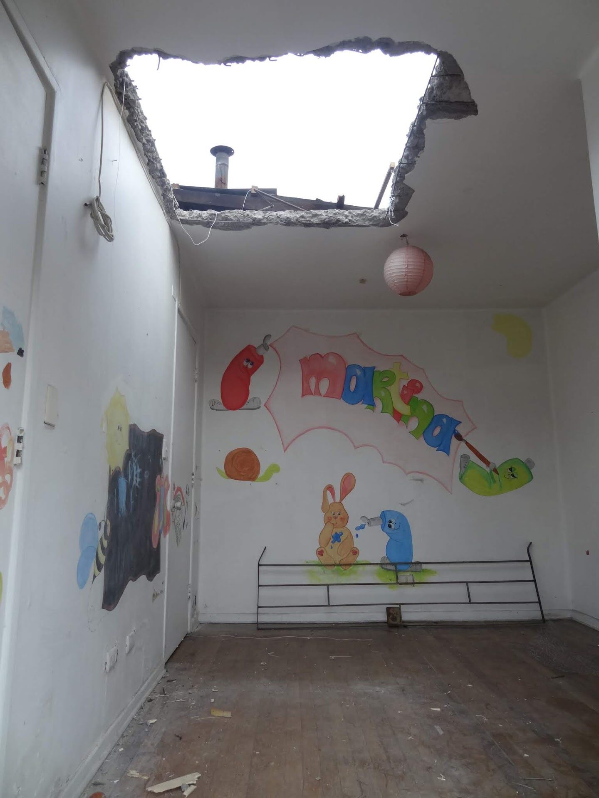
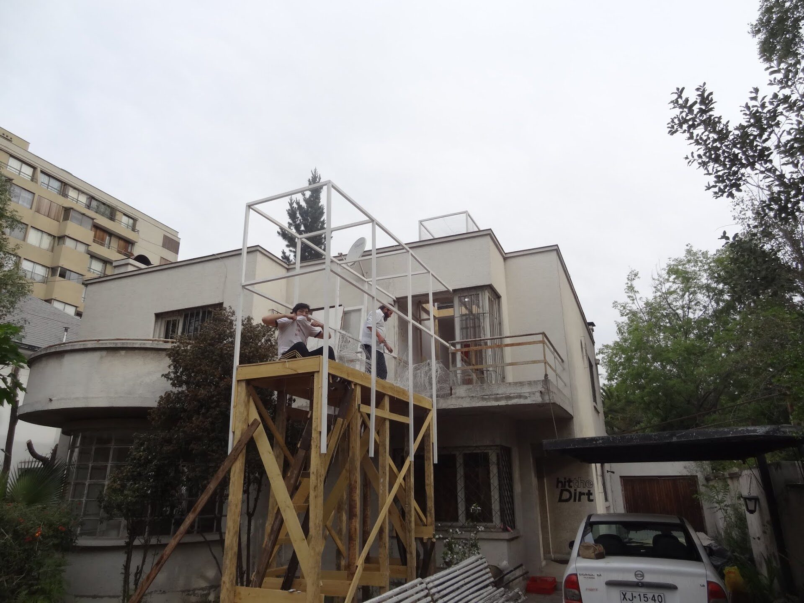
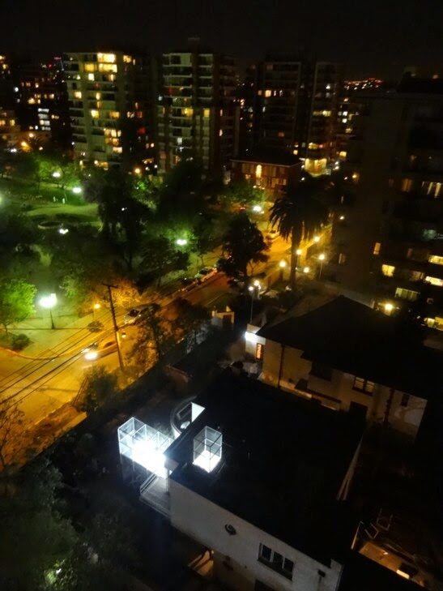

Dossier · El Allegado / La Divina Providencia
La Divina Providencia
Volumen inserto en una casa típica del sector de la comuna de Providencia, adquirida por una inmobiliaria para construir allí dos edificios. En conjunto con Carlos Peirano.
La habitación de Martina
La habitación de Martina, descubierta — el gesto que da nombre a esta imagen del proyecto: una casa que se vació de su vida doméstica para dar paso a una inmobiliaria, y en ese vaciamiento aparece, por un momento, la intimidad que quedó atrás.




UbicaciónREGIÓN METROPOLITANA
33°26′S · 70°36′O